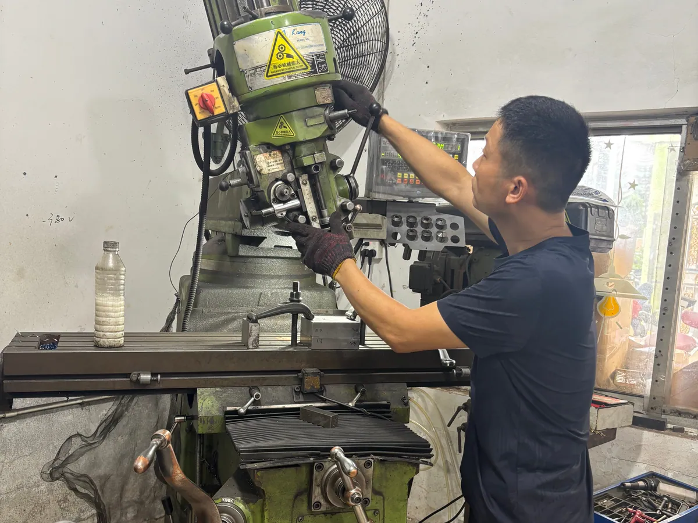
Mold making
The approved dice geometry, face layout, symbols, and production method are translated into tooling. Accurate mold preparation supports consistent shape and repeatable custom faces across a production batch.
See how custom metal dice and custom resin dice move from molds and casting through polishing, coloring, quality inspection, and packaging. These real production photos show the workflow behind B2B samples, custom projects, and repeat wholesale orders.
Custom dice buyers need to know how a design becomes a repeatable physical product. Factory photos make the key control points visible: tooling, casting, surface finishing, engraving, number filling, inspection, and retail packing.
For brands, game stores, distributors, crowdfunding projects, and event suppliers, this process supports better sample feedback and clearer production requirements before a bulk order begins.
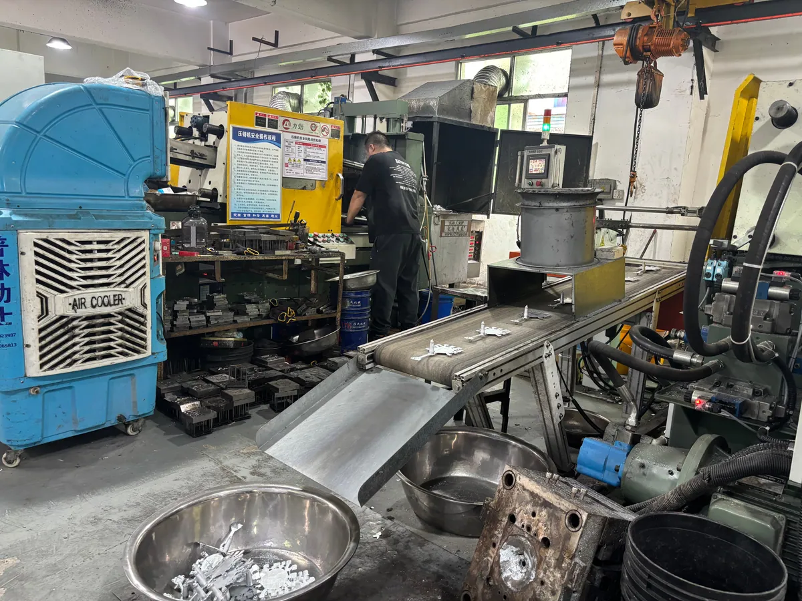
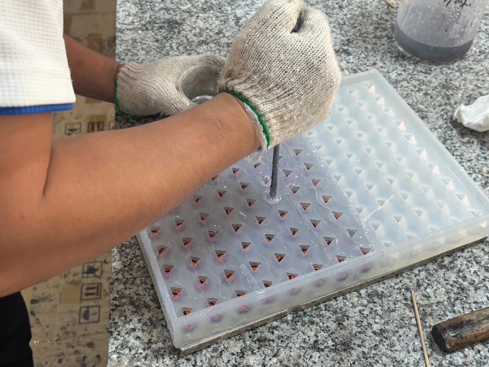
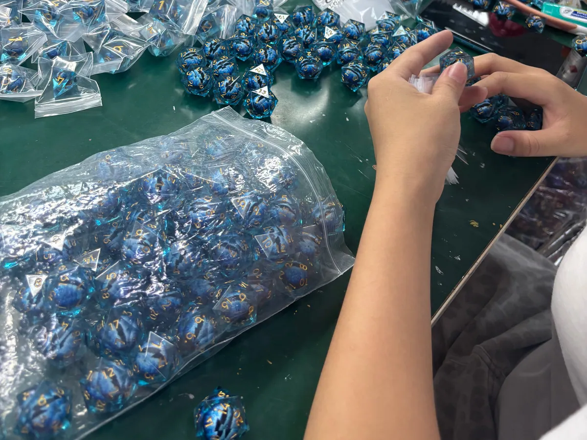
The metal dice workflow turns an approved shape and face design into a plated, colored, and packed product. Each stage affects weight, edge feel, surface consistency, finish color, and number readability.

The approved dice geometry, face layout, symbols, and production method are translated into tooling. Accurate mold preparation supports consistent shape and repeatable custom faces across a production batch.
Molten metal is formed with the production tooling. The cast parts are separated and prepared for finishing. This stage establishes the core weight, structure, and surface that later polishing and plating refine.
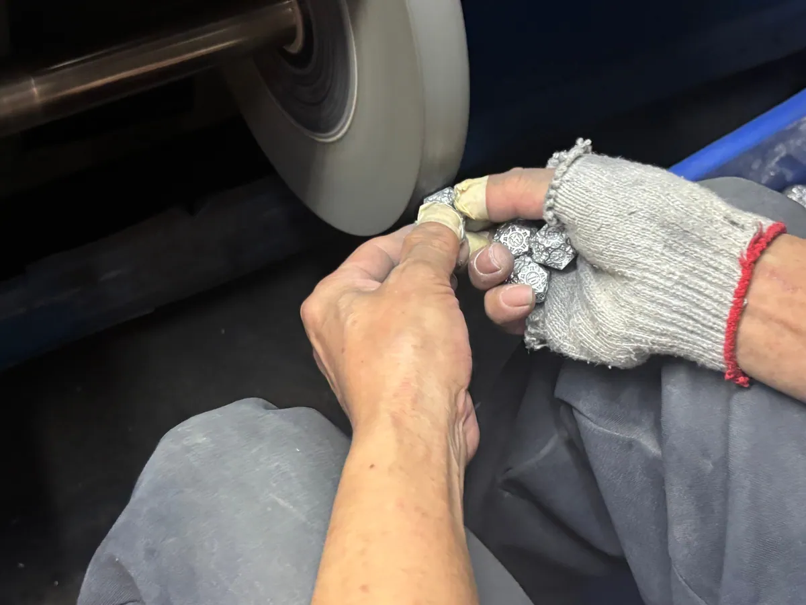
Cast surfaces and edges are polished to remove roughness and prepare the dice for plating. The target finish is reviewed for surface uniformity, edge feel, and readable face details.
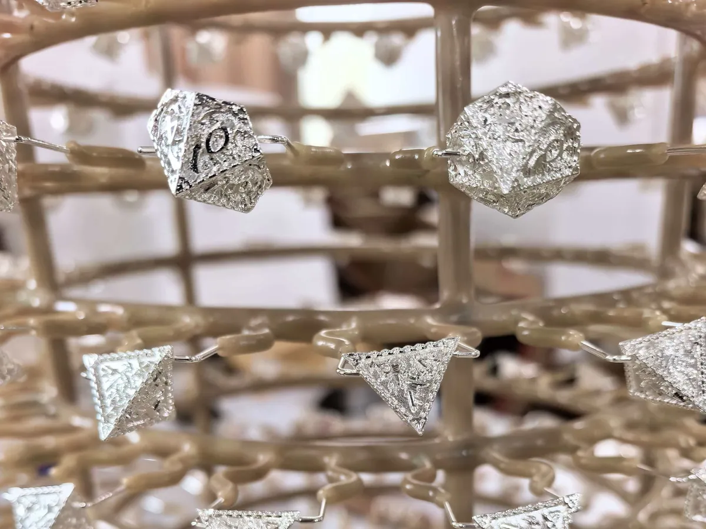
The selected surface finish is applied after polishing. Finish choices are matched to the approved sample so the product line has a consistent visual direction before the recessed numbers are colored.
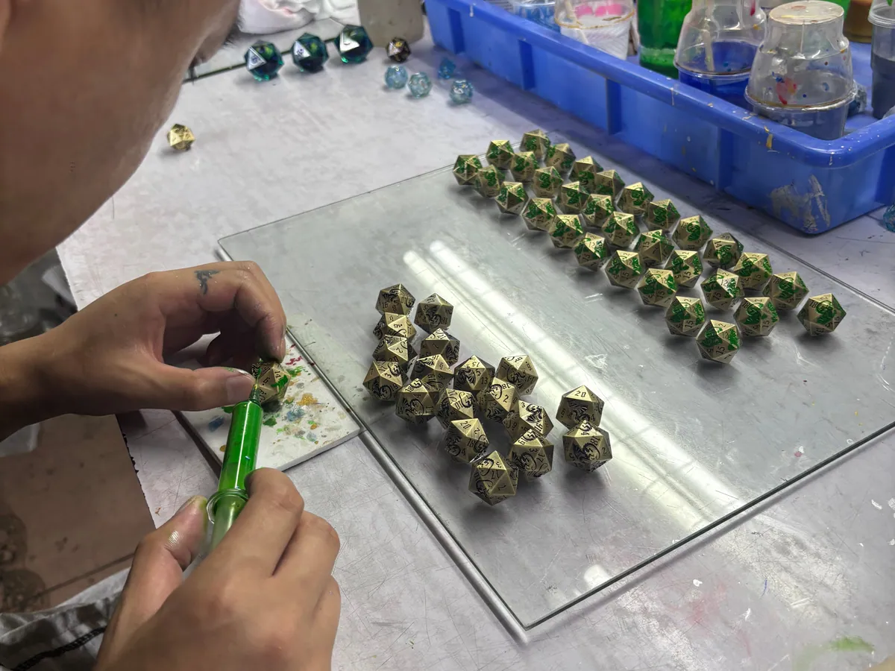
Number and symbol recesses are filled with the approved color. Contrast, fill coverage, and surface cleanup are checked because readable faces are central to both gameplay and retail presentation.

Finished sets are counted, matched to the correct SKU, and packed into the approved box, tin, bag, or private label format. Packaging artwork, inserts, labels, and carton requirements are confirmed before shipment.
Custom resin dice involve more manual control over color, inclusions, casting, surface finishing, engraving, and number fill. Physical samples are especially useful when buyers need to approve handmade visual variation.
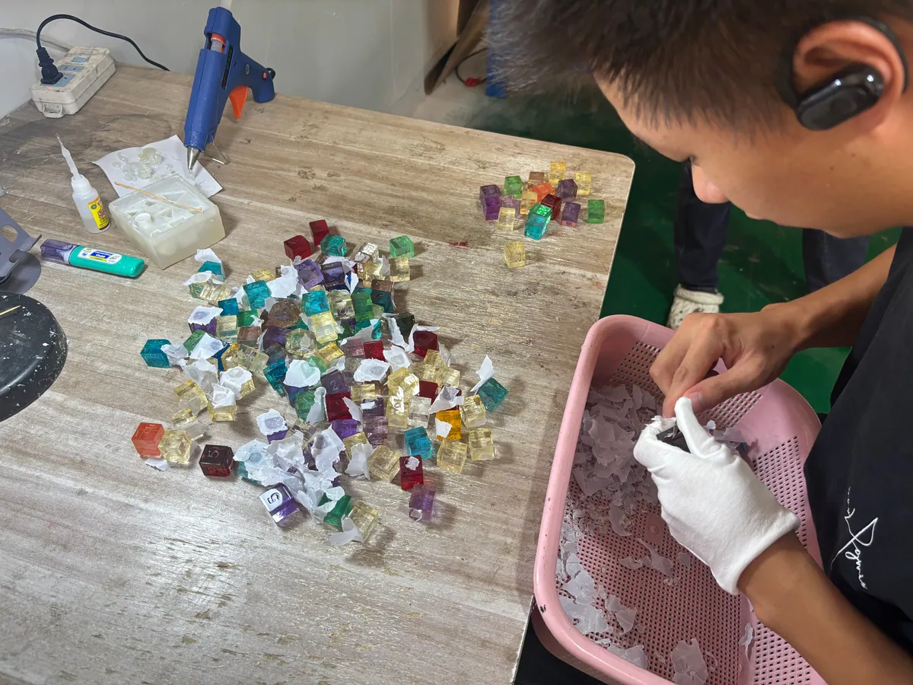
The custom face layout, logo, number style, and dice geometry are prepared as master pieces. These models define the shape that the production molds will reproduce.
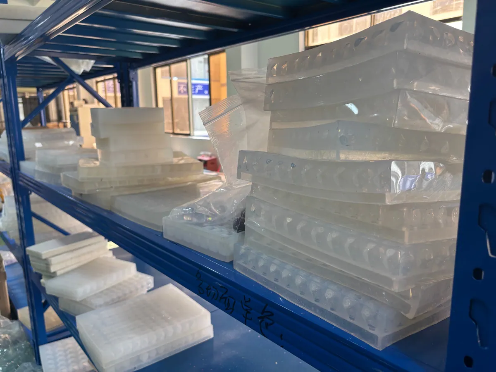
Production molds are made from the approved master models. Mold condition and cavity shape influence edge consistency, face detail, and the amount of finishing required after casting.
Resin, pigments, and approved decorative inclusions are prepared and cast into the molds. Color references and sample expectations guide the batch while allowing for the natural variation of handmade resin work.
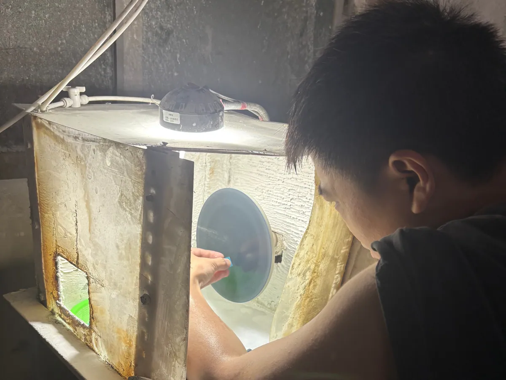
Resin dice are finished to improve clarity, remove casting marks, and refine the surface. The target can vary by product type, including sharp edge resin dice and other specialty forms.
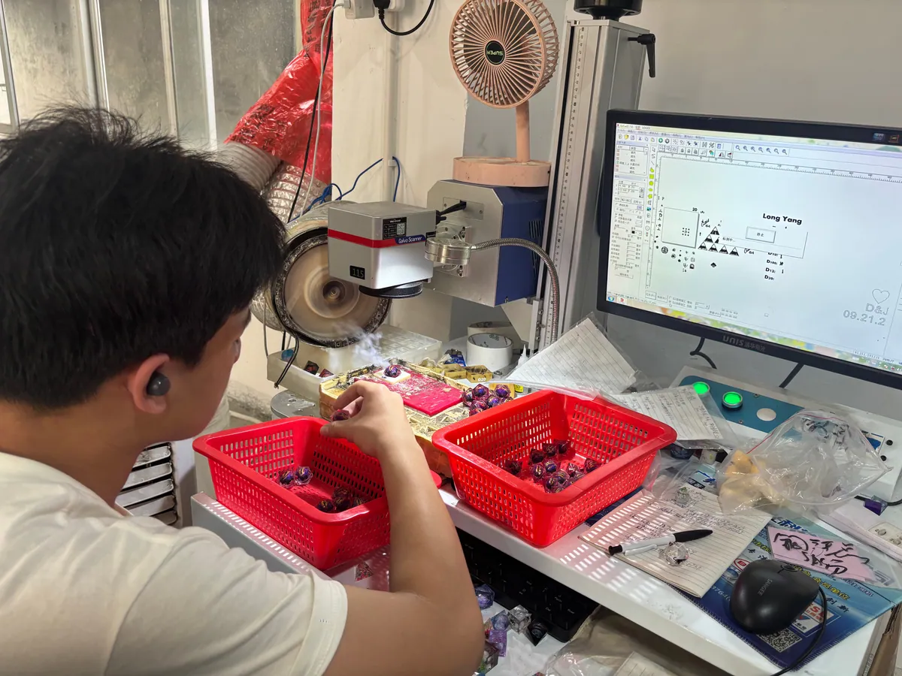
Numbers, logos, or selected custom face details are engraved after surface preparation. Artwork needs to balance brand detail with practical readability at the final dice size.
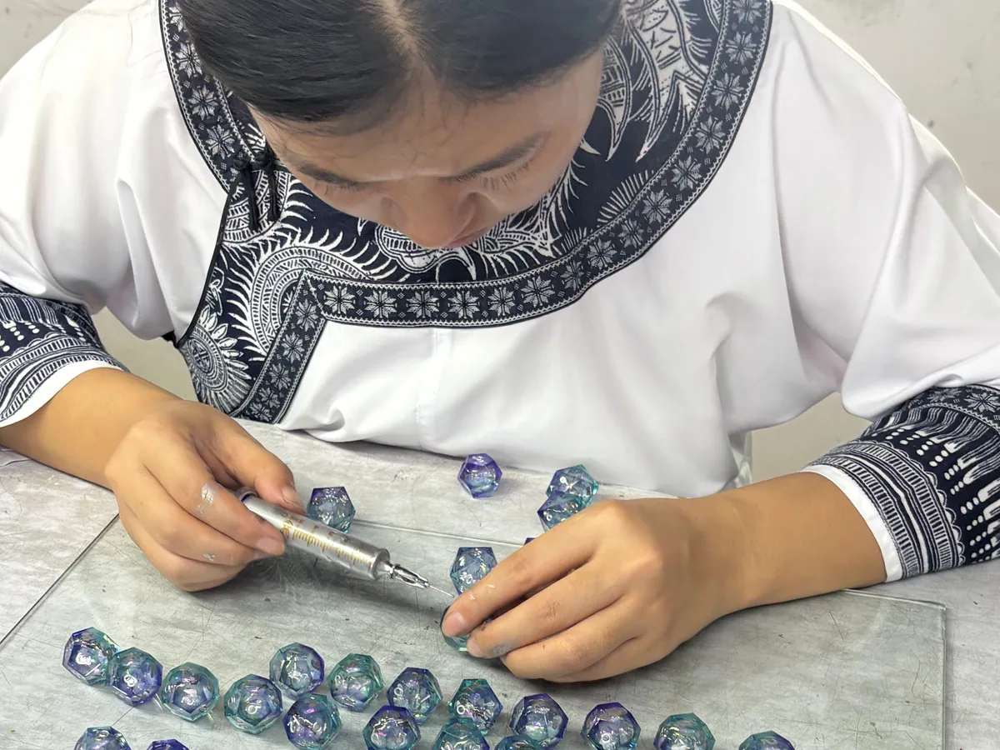
The engraved recesses are filled with the selected number color. Workers check contrast, coverage, and cleanup so the finished dice remain readable and match the approved product concept.
Approved resin sets are assembled and packed for wholesale delivery. Buyers can plan bags, tins, rigid boxes, display cartons, inserts, labels, and other private label packaging around the target retail channel.
A custom dice project is not limited to choosing a color. The production brief should connect the game concept, material, faces, finish, number readability, packaging, and sales channel.
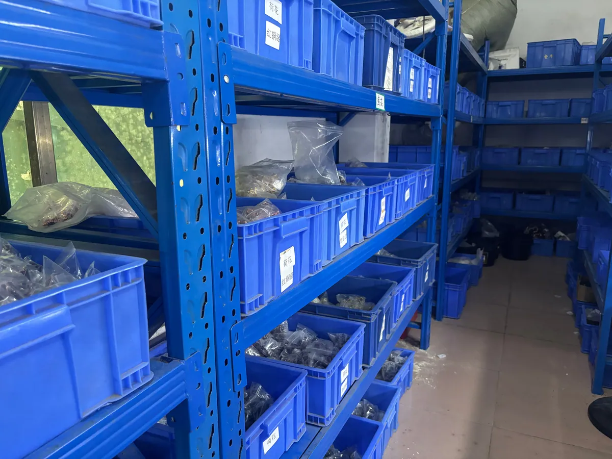
For more inspection detail, see our RPG dice quality control page and the custom dice ordering guide.
The metal dice process shown here includes mold making, die casting, polishing, electroplating, coloring, and packaging. Custom geometry, faces, finish, number color, and packaging are reviewed before bulk production.
The resin dice process includes master model making, mold making, resin casting, polishing, laser engraving, coloring, and packaging. Samples are used to review shape, color, inclusions, readability, and finish.
Yes. Sample review can confirm material, color, surface finish, number fill, custom faces, packaging fit, and visual expectations before the bulk order is released.
Send the dice material, dice type, custom face or logo artwork, color reference, finish, estimated quantity, packaging format, delivery country, and target launch date. Add reference images when the visual direction is difficult to describe.
Yes. Packaging can be planned around bags, tins, rigid boxes, inserts, labels, display cartons, gift sets, and private label retail requirements. The exact structure is confirmed with the product size and order plan.
Send enough information for the team to recommend the right material, tooling path, sample plan, packaging format, and quotation scope.